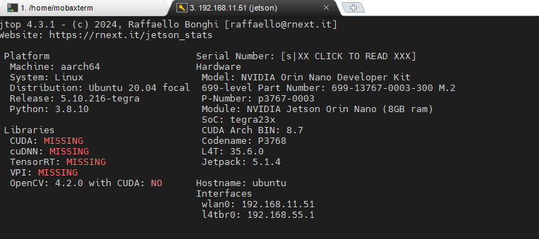

보드 정보
2. Jetson Linux 버전 확인
보드에서 사용 중인 **Jetson Linux 버전**을 확인하려면 다음 명령어를 실행하세요:
cat /etc/nv_tegra_release
1) 출력 예시
jetson@ubuntu:/sys/kernel/config$ cat /etc/nv_tegra_release
# R35 (release), REVISION: 6.0, GCID: 37391689, BOARD: t186ref, EABI: aarch64, DATE: Wed Aug 28 09:12:27 UTC 2024
jetson@ubuntu:/sys/kernel/config$
2) 결과 해석
R35: Jetson Linux R35 시리즈를 사용 중임을 나타냅니다.REVISION: 6.0: 세부 버전 정보 (예: R35.6.0).BOARD: 사용 중인 보드 모델 (예:t186ref는 Jetson TX2를 의미).EABI: ABI 정보 (대부분aarch64).DATE: 빌드된 날짜.
현재 Nvidia Jetson Linux R35.6.0 리눅스 버젼을 사용하는 것을 표시합니다.
Jetson Linux 35.6.0 다음 사항을 포함하고 있습니다.
- JetPack 5를 위한 최신 프로덕션 품질 릴리스
- Linux Kernel 5.10
- Ubuntu 20.04 기반의 루트 파일 시스템
- UEFI 기반의 부트로더,
이번 릴리스는 Jetson AGX Orin, Jetson Orin NX, Jetson Orin Nano, Jetson Xavier NX, Jetson AGX Xavier 프로덕션 모듈과 Jetson AGX Orin 개발자 키트, Jetson Orin Nano 개발자 키트, Jetson AGX Xavier 개발자 키트, Jetson Xavier NX 개발자 키트를 모두 지원합니다.
Jetson Linux 버전을 기준으로 JetPack 버전, 리눅스 커널 버전, 그리고 출시 날짜 정보는 다음과 같습니다.
| Jetson Linux 버전 | JetPack 버전 | 리눅스 커널 버전 | 출시 날짜 |
|---|---|---|---|
| Jetson Linux R35.3.1 | JetPack 5.1.1 | 5.10 | 2023년 6월 |
| Jetson Linux R35.4.1 | JetPack 5.1.2 | 5.10 | 2023년 8월 |
| Jetson Linux R35.5.0 | JetPack 5.1.3 | 5.10 | 2023년 10월 |
| Jetson Linux R35.5.1 | JetPack 5.1.4 | 5.10 | 2024년 1월 |
| Jetson Linux R35.6.0 | JetPack 5.1.5 | 5.10 | 2024년 8월 |
2. 현재 사용 중인 커널 버전 확인
터미널에서 다음 명령어를 실행하여 현재 사용 중인 커널 버전을 확인할 수 있습니다:
uname -r
jetson@ubuntu:~$ uname -r
5.10.216-tegra
jetson@ubuntu:~$ uname -a
Linux ubuntu 5.10.216-tegra #1 SMP PREEMPT Sat Jan 18 20:39:52 KST 2025 aarch64 aarch64 aarch64 GNU/Linux
jetson@ubuntu:~$
3. jtop 설치 및 확인
jtop은 NVIDIA Jetson 장치의 CPU, GPU, 메모리 사용량 등을 실시간으로 모니터링할 수 있는 편리한 도구입니다. 이를 설치하려면 jetson-stats 패키지를 사용해야 합니다. 설치 방법은 다음과 같습니다:
1) pip3 설치: jetson-stats는 Python 패키지 관리자인 pip3를 통해 설치됩니다. 만약 pip3가 설치되어 있지 않다면, 다음 명령어로 설치하세요:
sudo apt-get update
sudo apt-get install python3-pip
2) jetson-stats 설치: pip3를 사용하여 jetson-stats 패키지를 설치합니다:
sudo -H pip3 install -U jetson-stats
3) 시스템 재부팅: 설치가 완료되면, 시스템을 재부팅하여 변경 사항을 적용합니다:
sudo reboot
4) jtop 실행: 터미널에서 다음 명령어를 입력하여 jtop을 실행합니다:
jtop
이제 jtop을 통해 Jetson 장치의 리소스 사용 현황을 실시간으로 모니터링할 수 있습니다.
jtop info 탭에서 현재 사용중인 패키지 정보를 확인할 수 있다.
